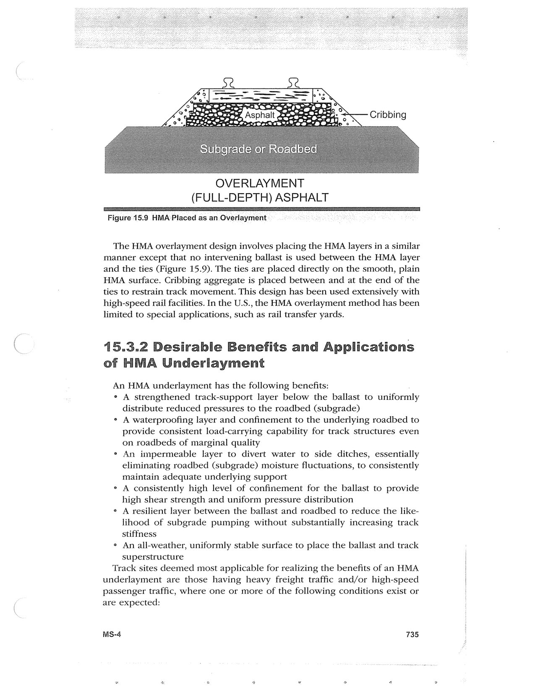

PDF page 769 · book page sequence 735


Searchable transcription
Unproofread OCR · 280 detected words; mean OCR confidence 91.43. Check technical values, symbols and table columns against the scan.
3 | SS c o4 Asphalt .<— Cribbing elelesie(S (ele px eyeie eisie OVERLAYMENT
_(FU LL- DEPTH) ASPHALT
Figure 1! 15.9 HMA F Placed as an LOverlayment
The HMA overlayment design involves placing the HMA layers in a similar manner except that no intervening ballast is used between the HMA layer and the ties (Figure 15.9). The ties are placed directly on the smooth, plain HMA surface. Cribbing aggregate is placed between and at the end of the ties to restrain track movement. This design has been used extensively with high-speed rail facilities. In the U.S., the HMA overlayment method has been limited to special applications, such as rail transfer yards.
15.3.2 Desirable Benefits and Applications of HMA Underlayment
An HMA underlayment has the following benefits:
e A strengthened track-support layer below the ballast to uniformly distribute reduced pressures to the roadbed (subgrade)
e A waterproofing layer and confinement to the underlying roadbed to provide consistent load-carrying capability for track structures even on roadbeds of marginal quality
° An impermeable layer to divert water to side ditches, essentially eliminating roadbed (subgrade) moisture fluctuations, to consistently maintain adequate underlying support
° A consistently high level of confinement for the ballast to provide high shear strength and uniform pressure distribution
° A resilient layer between the ballast and roadbed to reduce the like- lihood of subgrade pumping without substantially increasing track stiffness
e An all-weather, uniformly stable surface to place the ballast and track superstructure
Track sites deemed most applicable for realizing the benefits of an HMA
underlayment are those having heavy freight traffic and/or high-speed passenger traffic, where one or more of the following conditions exist or are expected:
MS-4 735